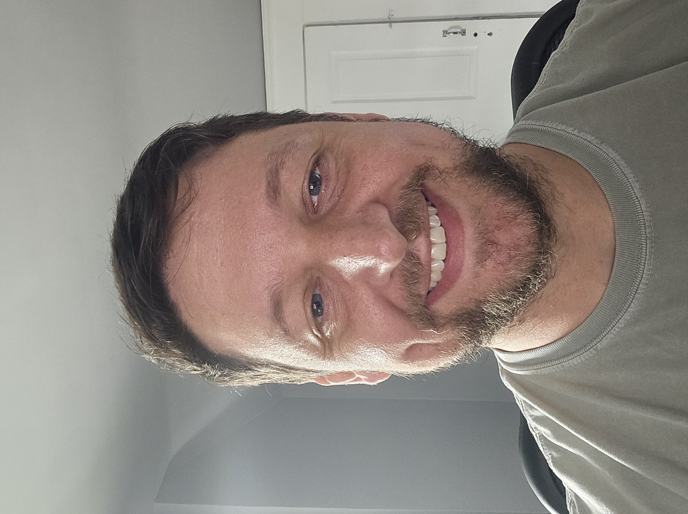
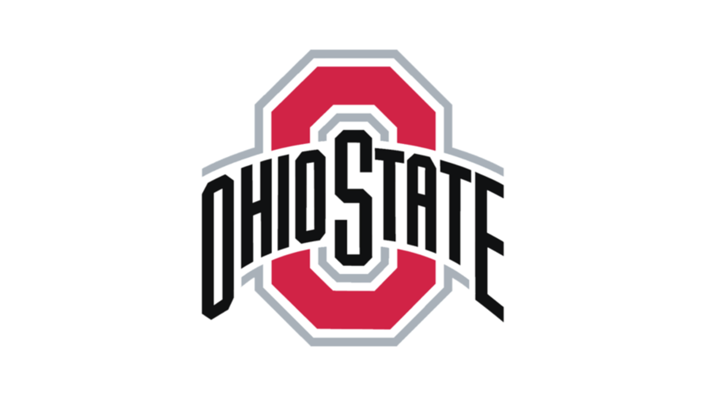
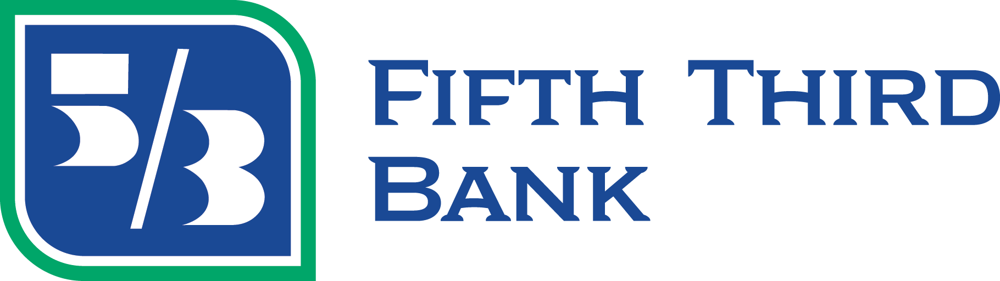
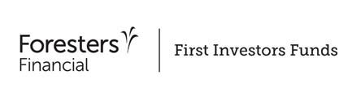

Jordan McGlade
Email: mcglade.8@gmail.com
Phone: 419-889-1706
LinkedIn
Tech Skills
-
Web Development
- HTML
- CSS
- JavaScript
-
Data Analysis
- Google Sheets plus Apps Script
- R
- Python
Other Skills
- Content Creation
- Atlassian/Confluence Artifacts
- Job Aids and Reference Guides
- Slide decks, Kahoot, Lessonly
- Training and Development
- Delivery of training content
- Post-training evaluation
- Cross-training in Upstart's core functions, including:
- Loan Application Review
- Pre- and Post-origination Customer Service
- Collections
Personal Projects hosted in Github Pages
Where a love for fantasy sports meets coding
Education
Northern Kentucky University
Master's in Business Informatics - projected graduation 2026

The Ohio State University
Bachelor of Science in Human Ecology - graduated 2014
Experience
Click each to expand/collapse
Upstart - Learning and Development Specialist - Jan 2020 to Oct 2024
- Developed a sandbox environment, used to train credit analysts on Upstart's systems
- Wrote single-page webapps to match live environments
- Integrated templates to mimic customer interactions
- Presented in a modal dialogue via Google Apps Script in Google Sheets
- User actions are recorded and submitted via the application for a facilitator to review
- Created job aids, reference guides, and procedure documentation
- Developed and delivered training to new hires and existing employees
- Leveraged subject-matter expertise into a learning and development role which allowed me to pursue my true passion: programming

Accomplishments
Fifth Third Bank - Capital Markets Specialist - 2015 to 2019
Huntington National Bank - Universal Banker - 2014 to 2015

Accomplishments
First Investors (now Foresters Financial) - Financial Services Representative - 2014
Accomplishments